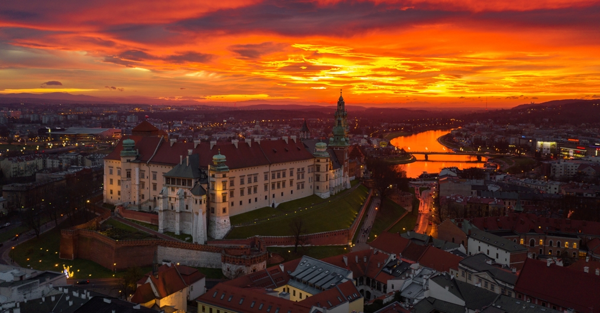

Wawel to jedno z najważniejszych miejsc w Krakowie. Znajduje się na wzgórzu nad Wisłą i przyciąga wielu turystów. Wawel to zamek królewski, który przez wieki był siedzibą królów Polski.
Na Wawelu znajduje się Katedra Wawelska, gdzie koronowano wielu polskich władców. W katedrze znajdują się także groby królów, poetów i bohaterów narodowych. Jest to miejsce bardzo ważne dla historii Polski.
Wawel to nie tylko zamek, ale także muzeum. W środku można zobaczyć komnaty królewskie, zbroje, obrazy i inne zabytki. Można też wejść na wieżę, z której rozciąga się piękny widok na Kraków i Wisłę.
Legenda głosi, że pod Wzgórzem Wawelskim mieszkał smok. Dziś można tam zobaczyć Smoczą Jamę i rzeźbę smoka, która zionie ogniem. To atrakcja, która bardzo podoba się dzieciom i dorosłym.
Wawel to także miejsce spacerów i odpoczynku. Na dziedzińcu zamkowym można posiedzieć, zrobić zdjęcia i podziwiać architekturę. Często odbywają się tu wycieczki szkolne i wizyty turystów z zagranicy.
Obecnie Wawel jest jednym z symboli Krakowa i całej Polski. To miejsce, które każdy powinien odwiedzić przynajmniej raz. Można tu poczuć historię i zrozumieć, jak ważne było dla naszego kraju.Zwiedzanie Wawelu to wspaniała przygoda. Warto wybrać się tam z rodziną lub klasą. Przewodnicy opowiadają ciekawe historie i pokazują najważniejsze miejsca. Po wizycie można wybrać się na spacer wzdłuż Wisły lub na Rynek Główny.